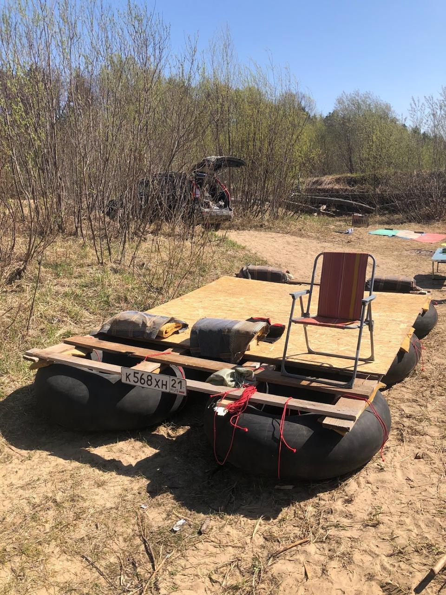

Программирование
начинается до кода
Первая встреча. Разработка, требования, ответственность.
Первая встреча. Разработка, требования, ответственность.
Как понять, что мы решаем нужную задачу?
Код начинается после того, как появляется понятная задача.
С 2009 года я работаю с системами, которыми люди и организации пользуются каждый день.
О том, что происходит с задачей до, во время и после написания кода.
Она меняет реальный процесс.
История для разговора: дистанционная аттестация позволила врачам проходить тестирование без поездки в компьютерный класс.
Потребность · контекст · ограничения · модель · проверка результата
Инструмент реализации не может исправить неверно понятую предметную область.
Эксперт предметной области знает реальный процесс.
Разработчик задаёт вопросы и превращает знание в проверяемую модель.
Решение появляется в разговоре, а не в угадывании.
То, что подтверждено.
Правдоподобная гипотеза.
Вопрос к эксперту или источнику.
Интерфейс был описан. Бизнес-правило — нет.
Команда предположила оплату за каждую выдачу полотенца. Реальный процесс оказался другим: фиксированная доплата к абонементу и свободное пользование.
Технически исправная реализация может противоречить реальному процессу.

Шесть человек собираются пройти маршрут по реке.
Нужно составить план, определить необходимые вещи и распределить ответственность.
Маршрут: какая река, длина, течение, препятствия, выходы?
Время: сколько светлого времени, какая погода, сколько дней?
Люди и судно: опыт, здоровье, грузоподъёмность, управление?
Автономность: связь, вода, еда, помощь, эвакуация?
10–12 минут
Они помогут настроить следующие занятия под реальную группу.
Мы не будем строить рейтинг «сильных» и «слабых».
| В разговоре о сплаве | В инженерной работе |
|---|---|
| Уточняли цель | Ставили задачу |
| Задавали вопросы | Собирали требования |
| Отделяли факт от догадки | Управляли неопределённостью |
| Искали риски | Проверяли граничные случаи |
| Договаривались о результате | Формулировали критерии готовности |
AI похож на экскаватор: он делает работу быстрее.
Но оператор всё равно отвечает за место, где копает, и за последствия.
Быстрая реализация усиливает и хорошее решение, и ошибочное направление.
Программирование начинается с понимания задачи: цели, условий, ограничений и способа проверить результат.
На следующей встрече оттолкнёмся от анонимной картины группы и попробуем это на небольшой практической задаче.